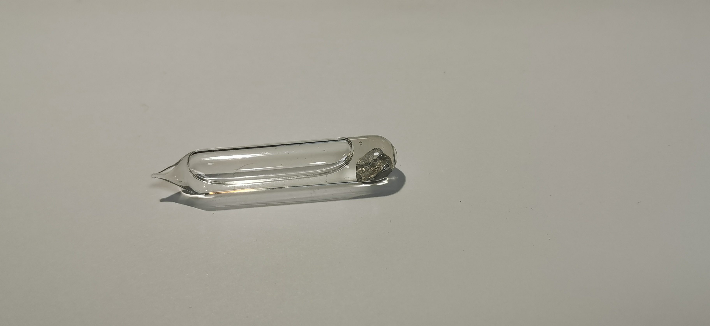
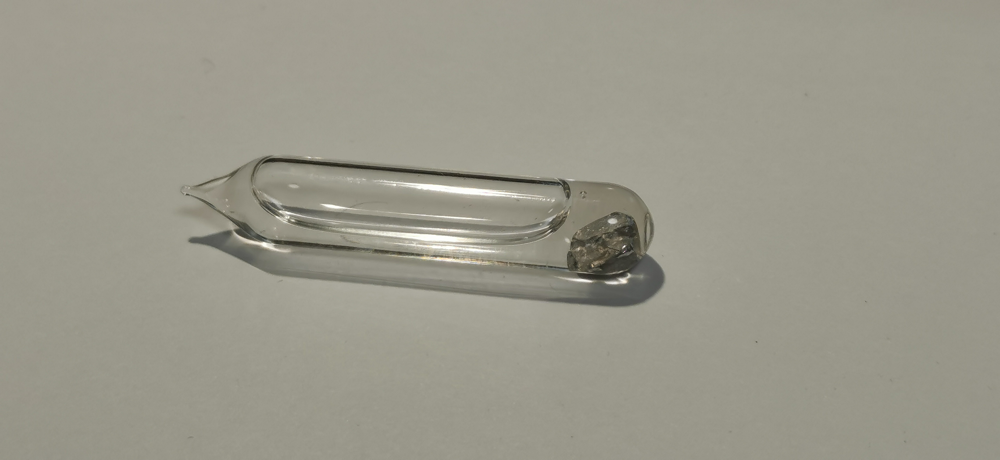

铊
2018.11 水封 来自Lost  
水封：铊在空气中易被氧化变黑，因此需要特殊处理。我获得此样品时，国内似乎并不流行真空封装，不过水封也能很大程度地保证铊不被氧化。图中由于光线也许并不清楚，但实际上这管铊样品的银白色金属光泽还是十分明显的。
毒性：铊和铊盐在1995年一场投毒案后广为人知，后来国内对铊盐的管制程度尤其上升。铊与其他本族金属比较，其+1价离子最为稳定，也正因此亚铊离子在人体内取代钾离子，最终导致神经传输和蛋白质活性的问题，这是铊中毒的原理。囿于当时国内的医疗水平，虽然借鉴国外经验使用普鲁士蓝治疗，但受害者仍未能痊愈；在2000年左右对铊中毒的治疗方法有所发展，有几篇文献指明国内目前应该可以大概率地完全治疗铊中毒患者。
Lost：特别说明我购买铊的商家，Lost目前是国内元素收藏圈知名的骗子。大概自从2019年后，Lost开始出售用稀土假造的“锕系元素”行骗，在贴吧和众多元素交流群臭名远扬。据我了解，我在购得铊样品时Lost似乎并未成为骗子，不过这管铊的真实性还需要证明。